圖片與來源
Skill 美術誌的文章是繁體中文編輯整理。用途範例由本站撰寫，並非測試結果；功能插圖由本站繪製；原作者示例另行標示，並保留對應的 MIT 授權文字。
資料怎麼來
本期依 2026 年 10 月 25 日的 GitHub API 快照、作者 README 與已核對的 SKILL.md 整理。每篇文章提供原始專案連結。星數只表示專案收藏總量，不是品質評分。沒有昨日資料的新候選不計算日增量。
本站功能插圖
每篇文章都有一張本站繪製的 SVG 功能示意圖，說明輸入、處理與成果。這些是編輯圖解，並非原作者的實際輸出；以本站 MIT 授權提供。原始圖檔可由各篇文章的「放大查看」開啟。
原作者圖片與授權
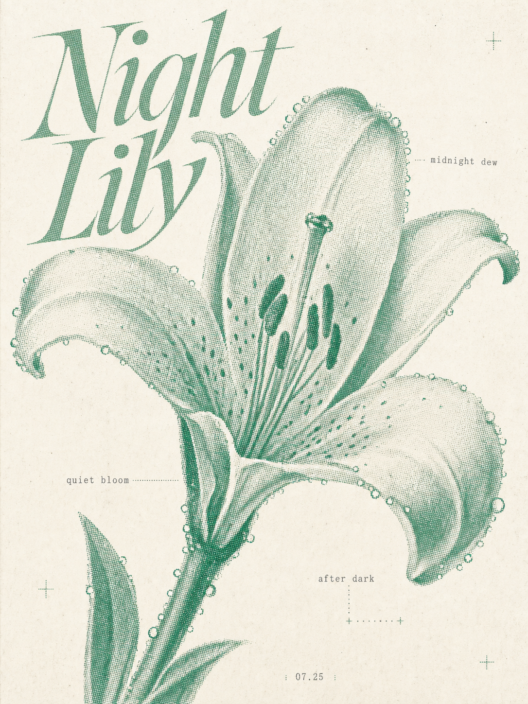
Pixel Style Poster Skill 原作者的 Mint Night Lily 百合網點海報；非本站生成
作者／專案：v92388375-gif/pixel-style-poster-skill。原始圖片 · 保留的 MIT 授權全文。

EL4CTEO 原作者的水泥牆材質展示；作者比較案例，非本站實測
作者／專案：EL4CTEO/blender-skills。原始圖片 · 保留的 MIT 授權全文。
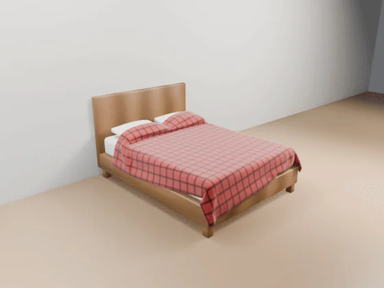
EL4CTEO 原作者的床單模擬展示；非本站實測
作者／專案：EL4CTEO/blender-skills。原始圖片 · 保留的 MIT 授權全文。
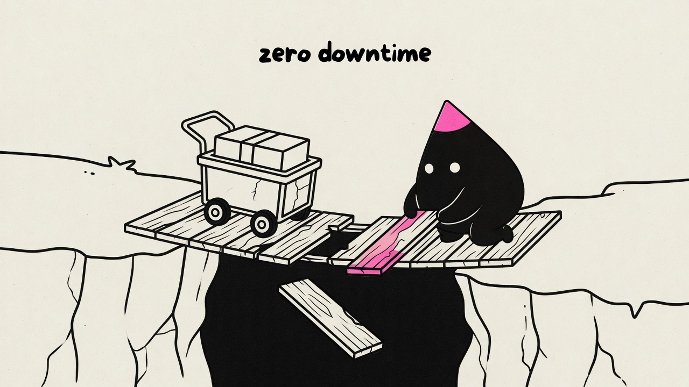
Illo by Trevin Chow. 原作者的零停機換橋概念插畫
作者／專案：tmchow/illo-skill。原始圖片 · 保留的 MIT 授權全文。
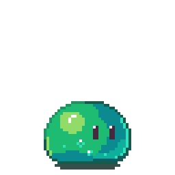
Aseprite AI Artist 原作者的史萊姆攻擊像素動畫
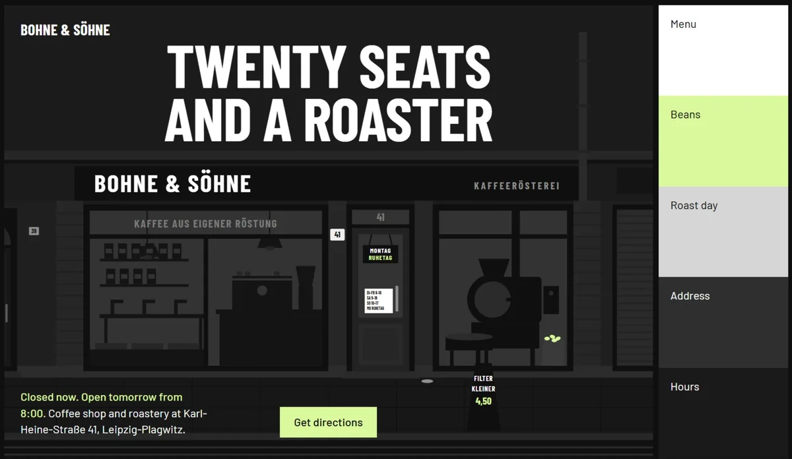
Taste Skill 原作者的咖啡店網站範例
作者／專案：Leonxlnx/taste-skill。原始圖片 · 保留的 MIT 授權全文。

Ian Xiaohei 原作者的兩個斷點手繪配圖
作者／專案：helloianneo/ian-xiaohei-illustrations。原始圖片 · 保留的 MIT 授權全文。
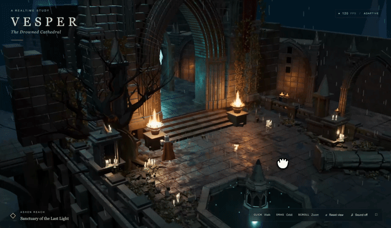
Dream Loop 原作者的 Vesper 等距場景示範
作者／專案：achimala/dream-loop。原始圖片 · 保留的 MIT 授權全文。
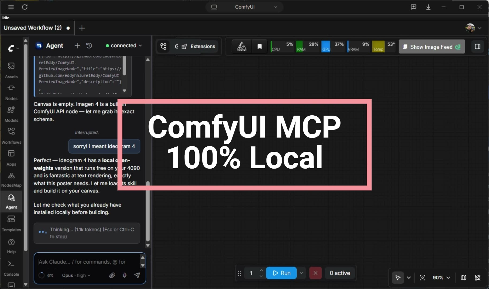
ComfyUI MCP 原作者的工作流操作畫面
作者／專案：artokun/comfyui-mcp。原始圖片 · 保留的 MIT 授權全文。
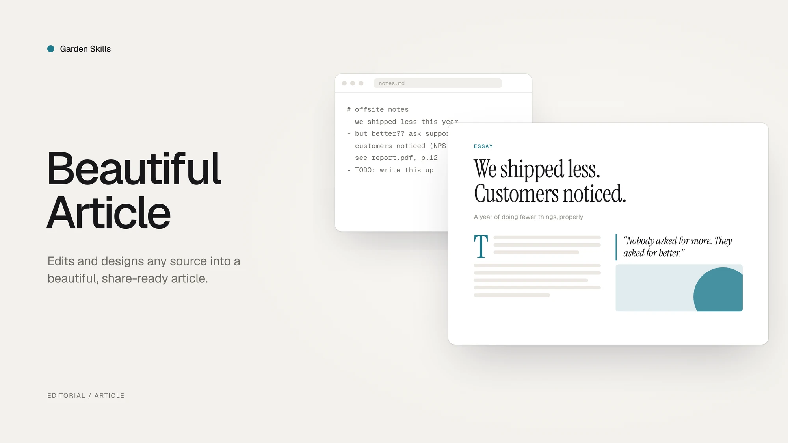
Garden Skills 原作者的視覺文章範例
作者／專案：ConardLi/garden-skills。原始圖片 · 保留的 MIT 授權全文。
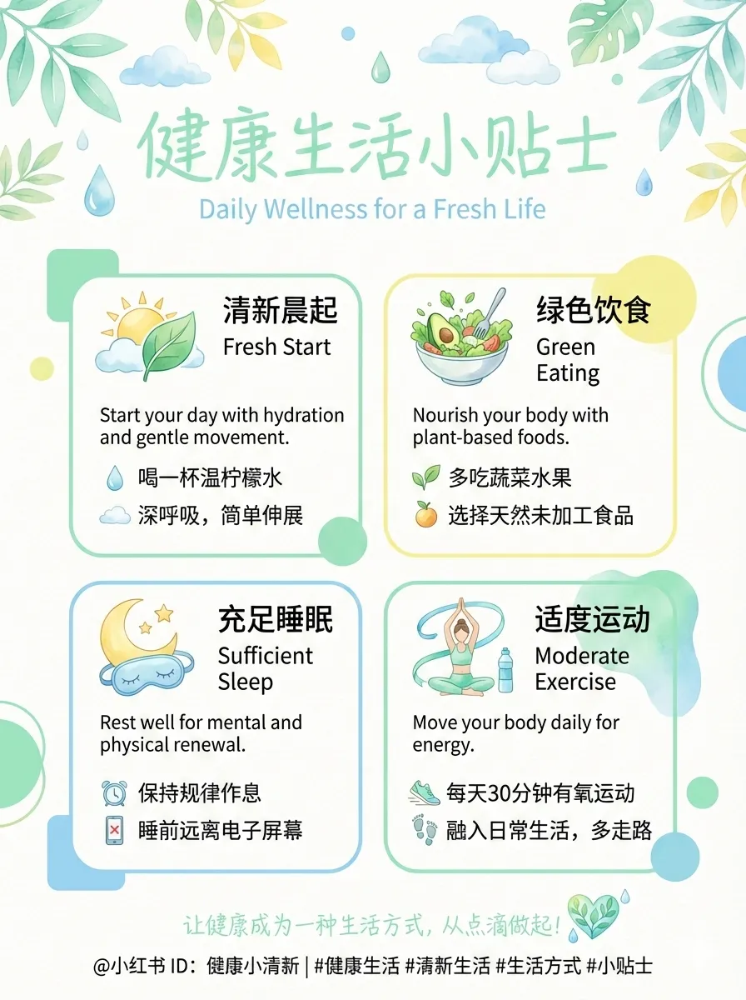
Baoyu Skills 原作者的 fresh 配圖風格示例
作者／專案：JimLiu/baoyu-skills。原始圖片 · 保留的 MIT 授權全文。
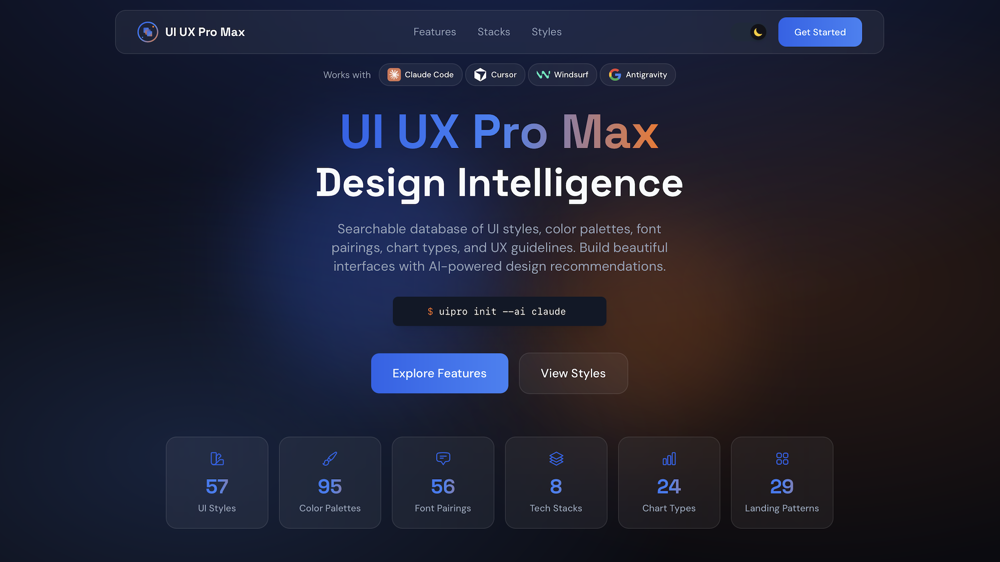
UI UX Pro Max 原作者的網站介面範例
作者／專案：nextlevelbuilder/ui-ux-pro-max-skill。原始圖片 · 保留的 MIT 授權全文。
等距單色設計工作室插畫
作者／專案：MengTo/Skills。原始圖片 · 保留的 MIT 授權全文。
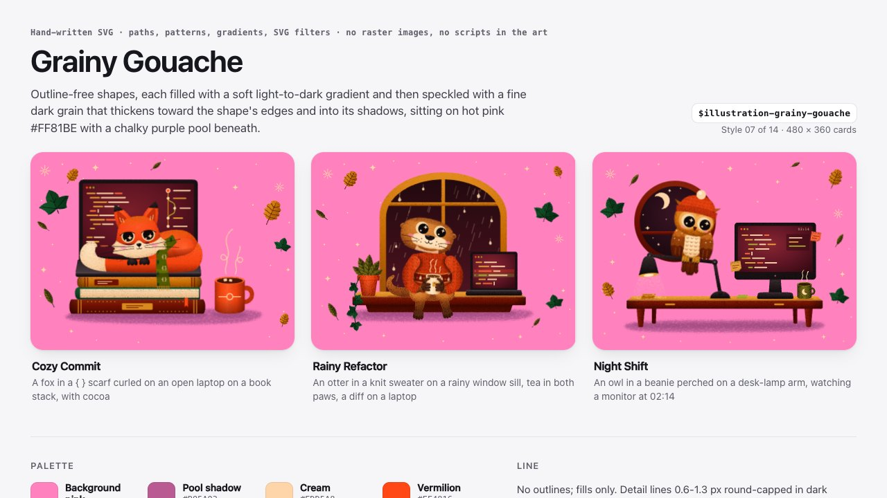
顆粒粉彩動物範例
作者／專案：MengTo/Skills。原始圖片 · 保留的 MIT 授權全文。
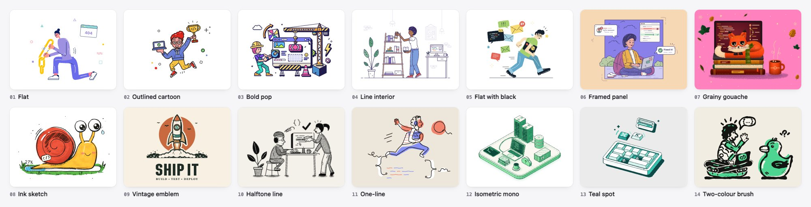
十四種插畫風格總覽
作者／專案：MengTo/Skills。原始圖片 · 保留的 MIT 授權全文。
水豚走路動畫
作者／專案：Gamezxz/pixel-art-studio。原始圖片 · 保留的 MIT 授權全文。

Raptor 引擎運作圖解
作者／專案：wheresryan22/anatomy。原始圖片 · 保留的 MIT 授權全文。
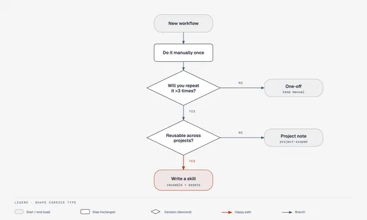
流程圖範例
作者／專案：cathrynlavery/diagram-design。原始圖片 · 保留的 MIT 授權全文。
標誌概念範例
你的資料
這是靜態閱讀網站，沒有帳號、追蹤器或留言資料庫。搜尋在瀏覽器中完成，條件會保留在網址，方便分享。複製範例只有在按下按鈕時使用剪貼簿。字體由 Google Fonts 載入，無法連線時使用裝置字體。